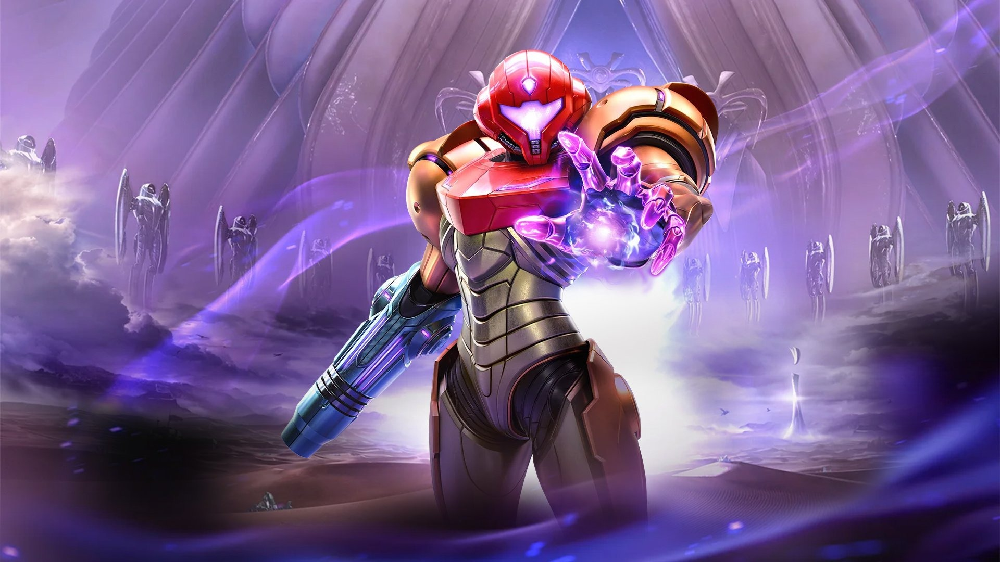

Universo Nintendo
Nintendo diz que mundo aberto de Metroid Prime 4 foi vítima do longo desenvolvimento do jogo

A Nintendo afirmou que não estava disposta a voltar atrás no design do controverso hub de mundo aberto de Metroid Prime 4: Beyond, apesar de ter percebido uma “mudança” nas atitudes em relação aos jogos de mundo aberto, já que o projeto já havia sido reiniciado uma vez.
O sucesso de vendas para Nintendo Switch e Switch 2 foi lançado no mês passado e recebeu críticas positivas em sua maioria, mas também uma ampla gama de críticas específicas por seus personagens coadjuvantes irritantes e seu hub de mundo aberto sem graça, onde você anda sem rumo em uma motocicleta.
Agora, em uma entrevista à Famitsu (traduzida via ResetEra / Nintendo Everything), a equipe de desenvolvimento de Metroid Prime 4: Beyond revelou que teve dificuldades para equilibrar o desejo da Nintendo de experimentar a jogabilidade de mundo aberto com a exploração central da série Metroid e, no final, teve que seguir com o plano original para o jogo, em vez de arriscar atrasá-lo ainda mais.